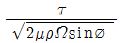

해양환경기사 (2013-06-02 기출문제)
1과목: 해양학개론
1. 어느 하수천에 많은 양의 용존 유기물과 Fe가 존재한다. 이 하천수가 estuary를 지나면서 볼 수 있는 용존 유기물질과 Fe의 변화는?
- Fe의 증가 및 용존 유기물질의 감소
- Fe의 증가 및 용존 유기물질의 증가
- Fe의 감소 및 용존 유기물질의 감소
- Fe의 감소 및 용존 유기물질의 불변
(정답률: 79%)

2. 다음 중 기초 생산력이 가장 낮은 해역은?
- 용승해역
- 연안해역
- 전선수역
- 북태평양 중심해역(gyre)
(정답률: 80%)
3. 심해퇴적물 중 콘드룰(condrule)의 기원은?
- 생물
- 우주
- 화산
- 풍성
(정답률: 81%)
4. 해수가 담수보다 얼기 어려운 이유로 가장 적절한 것은?
- 염분에 의한 빙점 강화 때문
- 해수는 항상 움직이기 때문
- 해수의 열용량이 더 크기 때문
- 최대밀도가 되는 온도가 빙점보다 낮기 때문
(정답률: 80%)
5. 계절수온약층(seasonal thermocline)이 가장 깊어지는 계절은?
- 봄
- 여름
- 가을
- 겨울
(정답률: 53%)
6. 계절풍에 대한 설명으로 적합하지 않은 것은?
- 계절에 따라 바람의 방향이 바뀐다.
- 위도에 따른 태양복사 에너지의 차이 때문에 생긴다.
- 지구표면상의 대륙과 해양의 분포와 밀접하게 관련되어 있다.
- 아시아 대륙의 남쪽 및 남동 해상에서 현저하게 나타난다.
(정답률: 91%)
7. 파장 15 m 주기 3 초인 표면 진행파의 경우 위상속도(phase speed)는?
- 2 m/sec
- 5 m/sec
- 7.5 m/sec
- 15 m/sec
(정답률: 92%)
8. Kelvin파에 대한 설명 중 틀린 것은?
- 지구자전의 영향이 나타난다.
- 북반구에서 해면변화는 파의 진행방향에서 왼쪽이 제일 크다.
- 진행속도는 수심에 관계된다.
- 조석파가 전파된 때 나타난다.
(정답률: 83%)
9. 대양저의 열류량에 대한 일반적인 양상 중 틀린 것은?
- 대서양 중앙해저 산맥에서는 높은 열류량을 나타낸다.
- 동태평양 해팽에서는 낮은 열류량을 나타낸다.
- 해구에서는 낮은 열류량을 나타낸다.
- 해저산맥의 측면을 따라 열류량이 작은 지역이 띠를 이룬다.
(정답률: 86%)
10. 해양에서 심층순환의 원인으로 가장 큰 비중을 차지하는 두 가지 사항을 바르게 묶은 것은?
- 이유와 분자확산
- 해류와 와동확산
- 해류와 분자확산
- 이류와 와동확산
(정답률: 82%)
11. Ekman이론에 의하면 충분히 깊은 바다의 표면에서 취송류속도 V0는

로 표현할 수 있다. 이 중 ø가 의미하는 것은?- 바람의 응력
- 해수의 밀도
- 지구상의 위도
- 연직와동 점성계수
(정답률: 78%)
12. 해수 중 NO-3-N과 PO3-4는 다음 중 어느 것에 속하는가?
- 생물제한성분(Biolimiting element)
- 주요원소(Major element)
- 기체성분(Gaseous element)
- 보존성분(Conservative constituent)
(정답률: 91%)
13. 다음 중 경제학적인 가치를 지니고 있는 망간단괴가 가장 많이 매장되어 있는 해역은?
- 태평양
- 지중해
- 인도양
- 대서양
(정답률: 86%)
14. 다음 중 지진활동이 가장 활발한 곳은?
- 대양저 산맥
- 해구
- 단열대
- 열점
(정답률: 62%)
15. 파랑의 에너지에 대한 설명으로 옳은 것은?
- 에너지는 파고에 비례
- 에너지는 파장에 비례
- 에너지는 파고의 제곱에 비례
- 에너지는 파장의 제곱에 비례
(정답률: 90%)
16. 내만에서 조고(潮高)와 조류(潮流)가 일어나는 때의 관계 설명으로 가장 적합한 것은?
- 조고가 최대일 때 조류도 최대이다.
- 조고가 낮을 때 조류가 최대이다.
- 조고가 없을 때 조류가 최대이다.
- 조고와 무관하다.
(정답률: 75%)
17. 블랙스모커와 화이트스모커를 온도와 분출속도로 비교한 내용으로 적합한 것은?
- 블랙스모커는 화이트스모터에 비해 온도는 높고 분출속도도 크다.
- 블랙스모커는 화이트스모커에 비해 온도는 높으나 분출속도는 작다.
- 블랙스모커는 화이트스모커에 비해 온도는 낮으나 분출속도는 크다.
- 블랙스모커는 화이트스모커에 비해 온도도 낮고 분출속도도 작다.
(정답률: 82%)
18. 다음 중 입도의 크기 순서대로 배열된 것은?
- sand > pebble > silt > clay
- sand > pebble > clay > silt
- pebble > sand > silt > clay
- pebble > sand > clay > silt
(정답률: 89%)
19. 도체가 지자기의 연직 성분을 가로지름에 따라 생기는 전위차를 측정하여 유속을 구하는 해류계는?
- GEK
- Ekman – merz Current Meter
- Thorndike Meter
- Savonius Rotor
(정답률: 86%)
20. 경사류(slope currents)에 관한 설명이 옳지 않은 것은?
- 해면 경사에서 비롯된다.
- 순압적(barotropic)이다.
- 경압적(baroclinic)이다.
- 적도잠류는 경사류의 일종으로 간주된다.
(정답률: 73%)
2과목: 해양생태학
21. 다음 중 해양에만 서식하는 종으로 구성된 동물군은?
- 원생동물
- 강장동물
- 연체동물
- 극피동물
(정답률: 87%)
22. 갈색공생조류(Zooxanthellae)에 관한 설명으로 옳은 것은?
- 산호류에 공생하여 석화작용(calcification)을 돕는다.
- 해산 현화 식물이다.
- 산호류에 기생하며 독 물질을 분비하여 숙주에 해를 준다.
- 해산 남조류이다.
(정답률: 81%)
23. 다음 중 종족 유지를 위한 회유는?
- 유기회유
- 성육회유
- 색이회유
- 산란회유
(정답률: 91%)
24. 일반적으로 강의 하구역(Estuary)에서 우점하는 해조류는?
- 녹조류
- 갈조류
- 홍조류
- 황색편모류
(정답률: 84%)
25. 온대해역 여름철 기초생산이 감소하는 일반적인 원인이 아닌 것은?
- 표층수와 저층수의 교환이 적다.
- 수온약층이 형성된다.
- 영양염이 고갈된다.
- 투명도가 낮다.
(정답률: 78%)
26. 식물플랑크톤은 물, 이산화탄소, 무기염을 태양에너지를 이용하여 유기물로 전환한다. 이러한 관점에서 해양에서 1차 생산에 영향을 미치는 저해요소로만 짝지어진 것은?
- 이산화탄소, 물
- 물, 무기염
- 태양광, 무기염
- 태양광, 이산화탄소
(정답률: 76%)
27. 우리나라 남해안의 굴 양식장은 밀식와 연작으로 노후화되어 여러 가지 현상들이 나타나게 되었다. 이러한 환경의 해양에서 일어나는 노후와의 영향과 가장 거리가 먼 것은?
- 저층 빈산소 상태 유발
- 유화수소의 발생으로 생산력 저하
- 영양염이 유리되어 적조발생
- 유기물 공급으로 저서동물의 생산량 증가
(정답률: 86%)
28. 다음 중 규조류(Diatom)와 관계가 없는 것은?
- 플랑크톤
- 다세포
- 엽록소
- 규조토
(정답률: 79%)
29. 플랑크톤을 채집하는 기구가 아닌 것은?
- Norpac Net
- Clarke-Bampus
- Bongo-net
- Gill-net
(정답률: 66%)
30. 저서생물의 영양군 편해작용(trophic group amensalism)의 과정 설명으로 옳지 않은 것은?
- 퇴적물식자는 자신들의 먹이 섭취 활동으로 인하여 퇴적물의 함수율은 높아지고, 표층 퇴적물은 재부유되어 부유물질의 농도를 너무 높이게 되며 이로 인해 부유물식자는 해를 입게 된다는 내용이다.
- 증가한 부유물질의 양은 부유물식자의 여과기관을 막히게 하므로 퇴적물식자의 활동이 활발한 지역에서는 부유물식자가 살 수 없다는 가설이다.
- 퇴적물식자가 그들의 먹이 섭취 과정에서 또는 그 결과 부유물식자를 배척 또는 해를 준다는 현상이다.
- 부유물식자의 먹이 섭취 활동으로 저질이 불안정하게 되고 수분함량이 높아져 결국 퇴적물식자와 부유물식자는 공존할 수 없게 된다는 가설이다.
(정답률: 66%)
31. 다음 중 갯벌의 생태학적 기능과 가장 거리가 먼 것은?
- 자연 정화조로서의 가능
- 주변의 어떤 해양생태계보다도 높은 생물다양성의 보고(寶庫)로서의 기능
- 높은 생물생산의 기능
- 낚시, 휴식, 관광지로서의 기능
(정답률: 84%)
32. 정체수면의 부영양화 진행 과정이 순서대로 바르게 나열된 것은?
- 오염증가기 → 조류번성기 → 호기성분해기 → 혐기성분해기
- 조류번성기 → 오염증가기 → 호기성분해기 → 혐기성분해기
- 조류변성기 → 오염증가기 → 혐기성분해기 → 호기성분해기
- 오염증가기 → 호기성분해기 → 조류번성기 → 혐기성분해기
(정답률: 85%)
33. 암반 조간대에 서식하는 무척추동물이 열저해에 견디는 방법과 그 대표적인 생물간의 연결이 옳은 것은?
- 매끈한 체표면을 가짐 – 총알고둥
- 표면적을 최소화 - 삿갓조개
- 그늘진 곳으로 이동 - 갯강구
- 밝은 패각을 가짐 –고동류(Nodlittorina)
(정답률: 82%)
34. 고래가 해양 생활을 할 수 있게 적응한 방법이 아닌 것은?
- 폐에서 질소를 흡수한다.
- 신장에서 염을 제거할 수 있다.
- 물속에서 심장박동이 활발하다.
- 혈액의 산소 저장 능력이 크다.
(정답률: 86%)
35. 저서동물의 생물교란 현상에 의해 나타나는 영향이 아닌 것은?
- 퇴적물의 수직구조 교란
- 표층퇴적물의 재순환
- 산화-환원층에의 영향
- 퇴적물의 안정화
(정답률: 78%)
36. 필로소마(Phllosoma)란 유생과 관계가 있는 것은?
- 보리새우(Panaeus japonicus)
- 젓새우(Acetes japonicus)
- 꽃게(Portunus trituberculatus)
- 닭새우(Panulirus japonicus)
(정답률: 79%)
37. 적조가 발생했을 때 일반적으로 일어나는 현상으로 옳은 것은?
- 산소가 점차 감소하고 유화수소가 발생한다.
- 산소가 계속 증가하고 유화수소는 감소한다.
- 산소가 증가하므로 암모니아가스는 줄어든다.
- 플랑크톤의 번식이 많으니까 온갖 고기가 모여든다.
(정답률: 92%)
38. 참조기의 산란장이 아닌 곳은?
- 산동반도 연안
- 서해연안
- 양쯔강 북부
- 제주도 근해
(정답률: 74%)
39. Mare에 의한 중형저서동물의 크기는?
- 그물코 15 mm 정도에 걸리는 생물
- 그물코 1.0 mm 정도에 걸리는 생물
- 그물코 1.0 mm 체를 통과하고 그물코 0.1mm 체에 걸리는 생물
- 그물코 0.1 mm 체를 통과하는 생물
(정답률: 87%)
40. 염습지 식물 생태계의 주요 특징이 아닌 것은?
- 기저부가 안정되어 있다.
- 생물상이 풍부하지 못하다.
- 염습지 중간지대는 많은 종이 출현한다.
- 영양 공급이 원활하다.
(정답률: 54%)
3과목: 해양계측학
41. 해상 음파 탐사에서 사용하는 수중청음기(hydrophone)란?
- 음원(音源)을 찾는 장비이다.
- 해저 지층간의 반사파나 굴절파를 수신하는 장비이다.
- 파도의 양향을 점검하는 장치이다.
- 해수의 음파속도를 측정하는 장치이다.
(정답률: 70%)
42. 다음 중 해저지형의 관찰로 대양저산맥의 확장을 연구하려 할 때 사용되는 장비로 가장 적합한 것은?
- 수중카메라
- 측면주사 음향탐사기
- 음향측심기
- 해상중력계
(정답률: 82%)
43. 해양학에서 사용하는 σt가 25.78로 표시되었다면 실제 밀도는?
- 1.2578 g/cm3
- 1.02578 g/cm3
- 1.002578 g/cm3
- 1.0002578 g/cm3
(정답률: 86%)
44. 퇴적물의 조립질 입자의 입도 분석에 사용되는 기기와 가장 거리가 먼 것은?
- 기계식 요동기(Ro-Tap)
- Air-Jet Sieve
- Rapid Sediment Analyzer
- Pycnometer
(정답률: 83%)
45. 공기중 전파의 속도는?
- 약 0.1㎞/㎲
- 약 0.2㎞/㎲
- 약 0.3㎞/㎲
- 약 0.4㎞/㎲
(정답률: 57%)
46. 북반구에서 해수의 밀도가 균일하고 수심이 매우 큰 바다 표층에서 코리올리 힘과 바람에 의한 마찰력 사이에 평형을 이룰 때 표층해류의 방향은?
- 바람의 진행방향
- 바람의 진행방향과 반대
- 바람의 진행방향에서 45° 오른쪽
- 바람의 진행방향에서 45° 왼쪽
(정답률: 87%)
47. 조석관측 방법으로 이용되지 않는 것은?
- 부표식
- 압력식
- 표척식
- 지자기식
(정답률: 87%)
48. 주로 LANDSAT에서 사용되는 탐사 장비로 가시광선 및 근적외선 영역의 전자 에너지를 4~5개 채널로 구분하여 감지하는 장비는?
- ALT
- AVHRR
- MSS
- SASS
(정답률: 76%)
49. Sand 나 Silt 또는 이들이 혼합된 퇴적물을 많이 채취할 때 사용되는 채니기로 가장 적합한 것은?
- Ekman type sampler
- Dredge
- Core sampler
- Sigsbee sampler
(정답률: 76%)
50. 현탁성물질을 여과하는데 통상 사용되는 Millipore filter HA형의 공경은 약 얼마인가?
- 0.45㎛
- 0.65㎛
- 0.30㎛
- 1㎛
(정답률: 87%)
51. 표류물에 의한 해류의 측정법이 아닌 것은?
- 투명도판에 의한 방법
- 해류판에 의한 방법
- 해류병에 의한 방법
- 선박의 추측위치와 실측위치의 차에 의한 방법
(정답률: 83%)
52. 해표면의 수온분포를 위해 사용되고 있는 열적외선은 AVHRR의 몇 번째 채널에서 감지하는가?
- 1
- 2
- 3
- 4
(정답률: 79%)
53. 다음 중 부진동(Seiche)의 설명이 가장 적합한 것은?
- 만에서 조석 진동 후에 나타나는 진동현상
- 외력에 의해서 생긴 만내의 진동현상
- 해저 지진에 의해 생긴 진동현상
- 기상현상에 수반된 연안진동현상
(정답률: 69%)
54. 해수와 담수의 빙점에 관산 설명 중 옳은 것은?
- 해수와 담수의 빙점은 동일하다.
- 담수는 해수의 빙점보다 낮다.
- 해수가 담수보다 빙점이 낮다.
- 해수와 담수의 빙점은 일정하지 않다.
(정답률: 91%)
55. 1개월 혹은 2개월 정도의 단기 관측으로 얻어진 평균 해면이나 조화상수는 주로 어떤 자료를 참조하여 년 평균값으로 보정하여 사용하는가?
- 주변 해역 관측치 평균
- 과거 동일지점의 관측자료
- 인근 표준항 자료
- 주변 해역의 비조화 상수
(정답률: 85%)
56. 인공위성에 의한 해양의 원격탐사에서 이용되지 않는 전자파 영역은?
- 감마선대
- 가시광선대
- 적외선대
- 레이다파대
(정답률: 77%)
57. 피스톤 시추기에서 채취된 퇴적물이 빠지지 않게 하는 부분은?
- Nose cone
- Core catcher
- Piston immobilizer
- Trigger arm
(정답률: 87%)
58. 수압뿐만 아니라 기압도 같이 감지되고 유속이 빠른 곳에서는 동압력에 의한 압력 감소도 감지되는 조석 관측 기기의 형식은?
- 기계식
- 전기 저항식
- 부표식
- 압력식
(정답률: 90%)
59. 바람에 의한 순수 취송류는 바람속도의 약 몇 % 정도인가?
- 0.03%
- 0.35%
- 3.5%
- 35%
(정답률: 75%)
60. 대조(spring tide)와 다음 대조와의 시간간격은?
- 약 1/2일
- 약 1일
- 약 7일
- 약 15일
(정답률: 79%)
4과목: 해수의 수질분석
61. 최적확수시험법에 의한 대장균군 시험법의 설명 중 틀린 것은?
- 측정단위는 MPL/100mL로 나타낸다.
- 희석수는 멸균된 증류수를 사용한다.
- 그람염색 시약으로는 수산암모늄-크리스탈 바이올렛, 루골용액, 카운터스테인, 아세톤, 알코올 등을 사용한다.
- 시료외 채취는 무균적으로 하고, 멸균된 용기에 넣어 하루 내에 측정하면 된다.
(정답률: 79%)
62. 해수 시료 중 규산염은 일차적으로 몰리브덴산 착화합물을 결성시켜 측정하는데, 이 때 해수 시료 중에 몰리브덴산 착화합물을 만드는 다른 성분은?
- 질산
- 바륨
- 인산
- 코발트
(정답률: 71%)
63. 해양생물 시료중의 유기염소계 농약을 기체크로마토 그래프로 분석할 때 유기용매로 추출한 후 기테크로마토 그래프에 주입하기 전에 실리카겔/알루미나 칼럼에 통과시켜 세척하는 이유는?
- 염분을 제거하기 위해
- 수분을 제거하기 위해
- 지방 등 유기분석방해물질을 제거하기 위해
- 부유물질을 제거하기 위해
(정답률: 82%)
64. 해양환경공정시험기준에서 해수중의 구리, 납, 카드뮴 등의 원자흡광광도법에 의한 분석 시 유기착화제(킬레이트)러 시용되는 것은?
- MIBK
- EDTA
- HDPE
- APDC/DDDC 혼합용액
(정답률: 77%)
65. 다음의 부유물질 측정에 관한 설명 중 틀린 것은?
- 유리섬유 여과지로 여과한다.
- 해수시료를 측정할 때 잘 흔들어 여과한다.
- 여과한 후 여과지의 염분을 제거하기 위해 10 mL의 증류수로 3회 반복 여과한다.
- 여과 후 상온에서 1시간 동안 건조 후 무게를 측정한다.
(정답률: 75%)
66. 해수시료 중 구리를 원자흡광광도계 또는 고감도의 ICP-MS를 이용한 분석 과정에 관한 내용이 아닌 것은?
- 회수율(recovery ratio)을 구하여 시료의 결과와 함께 제시한다.
- 지료를 여과한 다음 질산으로 pH를 1.5 ~ 2.0으로 보관하면 최대 2년까지 보관이 가능하다.
- 만일 시료의 농도가 최대측정범위를 크게 초과할 때는 1N 중크롬산용액으로 희석하여 측정한다.
- 일반적으로 해수 중 농도가 미량이어서 오염가능성을 배재시키는 HEPA여과시설 및 수평기류가 가능한 청정 분석환경이 필요하다.
(정답률: 58%)
67. 해양퇴적물의 입도등급에서 점도(CLAY)를 극세립실트(very find silt)와 점토(clay)로 구분할 때 점토의 입자직경 크기는?
- 0.002mm 이하
- 0.002 ~ 0.004mm
- 0.004 ~ 0.008mm
- 0.016mm 이상
(정답률: 55%)
68. 인도페놀법으로 해수중의 암모니아 질소를 분석할 때 생성하는 인도페놀의 색과 측정 파장은?
- 푸른색, 640 nm
- 녹색, 510 nm
- 담홍색, 540 nm
- 분홍색, 610 nm
(정답률: 77%)
69. n-Hexane 추출물 함유량의 검정은?
- 수분
- 암모니아염
- 유분
- 시안(CN)
(정답률: 72%)
70. 해수중의 중금속 시료를 채취하기 위하여 필요한 기구로 적합한 것은?
- 니스킨 채수기(Niskin sampler)
- 반돈 채수기(Van Dorn sampler)
- Go-Flow 니스킨 채수기
- ICP-MS
(정답률: 74%)
71. 해저퇴적물 중의 총 황에 대한 설명으로 틀린 것은?
- 퇴적물 중 황은 공극수 중의 황산염, 황화수소, 황화물, 황산염 광물, 유기황화물의 형태로 존재한다.
- 퇴적물의 유기물 오염이 심해지면 퇴적물 중 황화물의 양이 줄어든다.
- 황화물량을 선택적으로 측정하기 어렵다.
- 중량법으로 측정할 수 있다.
(정답률: 78%)
72. 해저퇴적물 중 비소(As)를 측정하는 원리와 시험방법에 대한 설명 중 옳지 않는 것은?
- 비소는 자연계에서 3가 및 5가의 화합물로 존재하나 3가의 비소는 측정이 불가능하다.
- 비소의 측정을 위해서는 퇴적물 내 비소를 모두 환원시켜야 한다.
- 퇴적물 내에 비소를 질산, 황산 및 불소산을 이용하여 완전 분해한 후 1N 염산 용액으로 재용해시킨다.
- 램프는 비소 무전극램프를 사용하고 수소발생환원 기화기를 같이 사용한다.
(정답률: 64%)
73. COD 분석용 0.025N KMnO4 용약 1 L를 만들려면 KMnO4 몇 g을 증류수에 용해해서 1 L로 만들면 되는가? (단, 분자량은 KMnO4 158임)
- 0.25 g
- 0.79 g
- 1.58 g
- 4.0 g
(정답률: 64%)
74. 다음의 실험오차 중 우연오차(random error)에 해당되는 것은?
- 흡습성(hygrometric) 시약의 무게 측정
- 잘못된 기준물질의 사용
- 오염된 증류수의 사용
- 실험자의 실수
(정답률: 72%)
75. 다음 중 클로로필 측정과 관계없는 파장은?
- 480 nm
- 540 nm
- 645 nm
- 750 nm
(정답률: 73%)
76. Winkler 법에 의한 해수 중의 DO 측정에 나오는 화학반응식 중 틀린 것은?
- Mn2+ + 2OH- → Mn(OH)2
- 4Mn(OH)2 + 3O2 + 2H2O → 4MnO(OH)3
- I2 + I- = I3-
- I3- + 2S2O32- → 3I- + S4O62-
(정답률: 62%)
77. 해주중의 Polychlorinated Biphenyls 분석에 관한 설명으로 틀린 것은?
- 노르말헥산으로 추출하여 기체크로마토그래피로 분리한다.
- 기체크로마토그래피는 검출기는 전자포획형 검출기(ECD)를 사용한다.
- 노르말헥산으로 추출하여 농축 후 실리카겔 칼럼을 통과하여 분석방해물질을 제거한다.
- PCB는 단일물질이기 때문에 얻어진 크로마토그램에서 표준물질과 동일한 머무름 시간을 가진 한 개의 피크 면적으로부터 농도를 계산한다.
(정답률: 51%)
78. 해양환경에서 아질산성 질소 측정에 관한 설명으로 옳지 않는 것은?
- 아질산성 질소는 일차적으로 방향족 질소화합물인 술퍼닐아미드와 산성조건하에서 반응하여 디아조늄이온을 형성한 후 이차적으로 다른 방향족 질소 화합물인 나프틸에틸렌아미드와 반응하여 분홍색의 용약을 생성하게 된다.
- 분광광도계에서 퇴대 흡수파장인 543 nm에서 최종 발색된 용액의 흡광도를 측정한다.
- 시료 중의 높은 농도의 황화수소에 의해 간섭받을 수 있으므로 무산소 환경에서 채취된 시료의 경우 질소 기체로 황화수소를 탈기시켜 분석한다.
- 대기 중으로부터 오염될 가능성이 높다.
(정답률: 49%)
79. 다음 중 대장균군의 정성시험 단계가 아닌 것은?
- 예비시험
- 확정시험
- 추정시험
- 완전시험
(정답률: 63%)
80. 해저퇴적물 중 중금속 성분을 분석하는데 있어 가장 많이 사용되는 기기는 원자흡수분광광도계이다. 이 기기를 사용할 때 각 물질과 중공음극관의 파장이 틀린 것은?
- 구리 : 324.7 nm
- 망간 : 279.5 nm
- 아연 : 213.9 nm
- 알루미늄 : 248.3 nm
(정답률: 74%)
5과목: 해양관련법규
81. 해양환경관리법의 적용범위에 해당하지 않는 것은?
- 방사성 물질에 의한 해양오염・대기오염
- 대한민국 영토에 접속되는 해역 안에서 행하여진 해양오염
- 선박법 규정에 의한 대한민국 선박에 의하여 행하여진 해양오염
- 해저광물자원 개발법 규정에 의한 해저광구의 개발과 관련하여 발생한 해양오염
(정답률: 79%)
82. 해양환경관리법상 기름의 해양유출사고에 대비하여 방제선을 배치해야 하는 선박 기준으로 옳은 것은?
- 총톤수 300톤 이상의 유조선
- 총톤수 500톤 이산의 유조선
- 총톤수 3000톤 이상의 선박
- 총톤수 5000톤 이상의 선박
(정답률: 73%)
83. 해양환경관리법상 해양오염방제업 및 유창청소업을 등록하고자 하는 자는 누구에게 등록신청을 해야 하는가?
- 해양경찰청장
- 항만관리청장
- 시・도지사
- 해양수산부장관
(정답률: 69%)
84. 유조선에 의한 유류오염피해자가 유조선의 선박 소유자 또는 보험자 등으로부터 배상을 받지 못한 유류오염손해 금액에 관하여 보상을 청구할 수 있는 대상은?
- 피해자 소속국
- 가해선 선장 소속국
- 국제기금
- 선박소유자 소속국
(정답률: 72%)
85. 해양환경관리법에서 분류하고 있는 유해액체물질의 분류 기준이 되는 근거는?
- 환경정책기본법
- 유해액체물질관리법
- 유엔해양법협약
- 73/78 MARPOL
(정답률: 76%)
86. 산적 유류를 화물로서 운송하는 선박 소유자는 몇 톤 이상인 경우 반드시 유류오염손해배상보장 계약을 체결하여야 하는가?
- 100 톤
- 200 톤
- 300 톤
- 400 톤
(정답률: 66%)
87. 수질환경보전법상 항만이 포함되는 수역은?
- 내수
- 공공수역
- 연안해역
- 평수구역
(정답률: 65%)
88. 연안관리법상 해양수산부 장관은 효율적인 연안정비사업을 위하여 몇 년 단위로 연안정비계획을 수립해야 하는가?
- 1년
- 3년
- 5년
- 10년
(정답률: 57%)
89. 해양환경관리법규상 분뇨오염 방지설비를 설치하여야 할 선박기준은?
- 총톤수 100톤 이상의 선박, 최대승선인원 10인 이상의 선박
- 총톤수 150톤 이상의 선박, 최대승선인원 15인 이상의 선박
- 총톤수 200톤 이상의 선박, 최대승선인원 20인 이상의 선박
- 총톤수 400톤 이상의 선박, 최대승선인원 16인 이상의 선박
(정답률: 52%)
90. 유류오염 손해배상 보장법은 어떤 종류의 유류오염사고가 발생한 경우에 적용되는 손해배상책임에 관한 법률인가?
- 선박으로부터의 기름 유출
- 양어장으로부터의 기름 배출
- 비행기의 추락으로부터의 기름 배출
- 저유시설로부터의 기름 유출
(정답률: 81%)
91. 해양환경관리법상 정하고 있는 해역관리청으로 해양수산부장관의 관할 해역이 아닌 것은?
- 우리나라 배타적 경제수역
- 영해 및 접속수역법 상의 영해
- 항만법 규정에 의한 지정항만
- 어항법 규정에 의한 제1종 어항
(정답률: 61%)
92. 해양환경관리법상 환경보전해역에 대한 사항이 아닌 것은?
- 오염물질을 총량으로 규제할 수 있다.
- 생태계의 보전이 양호한 곳으로서 지속적인 보전이 필요한 해역이다.
- 대통령령이 정하는 시설의 설치를 제한할 수 있다.
- 해양오염에 직접 영향을 미치는 경우 육지를 포함한다.
(정답률: 50%)
93. 해양오염방지협약상 해양학・생태학・해상교통의 특수성 등의 이유로 폐기물에 의한 해양오염 방지를 위하여 특별한 강제조치의 채택이 요구되는 특별해역에 포함되지 않는 것은?
- 지중해역
- 남극해역
- 걸프해역
- 베링해역
(정답률: 80%)
94. 유류오염손해배상보장법상 선박소유자의 손해배상책임을 제한할 경우 책임한도액을 구분 짓는 선박 톤수는?
- 1000톤
- 3000톤
- 5000톤
- 10000톤
(정답률: 65%)
95. 선박의 해양오염방지관리인의 업무가 아닌 것은?
- 해양시설오염물질기록부의 기록 및 보관
- 해양오염 방지설비의 설치 및 정비
- 해양오염 방제를 위한 자재 및 약제의 관리
- 오염물질 배출이 있는 경우 신속한 신고 및 필요한 응급조치
(정답률: 56%)
96. 73/78 해양오염방지협약상 국제유류오염방지증서(International Oil Pollution Prevention Certificate)를 교부 받아야 할 유조선의 크기는?
- 총톤수 50톤 이상
- 총톤수 100톤 이상
- 총톤수 150톤 이상
- 총톤수 200톤 이상
(정답률: 65%)
97. 73/78 MARPOL 에서 규정하고 있는 국제기름오염방지증서의 유효기간은?
- 2년
- 3년
- 4년
- 5년
(정답률: 73%)
98. 유류오염손해배상보장법상 보장계약증명서의 기재사항에 변경이 생긴 경우 그 변경이 있은 날로부터 며칠 이내에 변경사항을 신고하여야 하는가?
- 3일
- 6일
- 10일
- 15일
(정답률: 76%)
99. 유류오염손해배상 보장법상 선박소유자에 대한 손해배상청구권에 관한 설명으로 옳은 것은?
- 유류오염손해가 발생한 날부터 1년 이내에 재판상 청구가 없는 경우에는 소멸한다.
- 유류오염손해가 발생한 날부터 3년 이내에 재판상 청구가 없는 경우에는 소멸한다.
- 유류오염손해의 원인이 되었던 최조의 사고가 발생한 날부터 3년 이내에 재판상 청구가 없는 경우에는 소멸한다.
- 유류오염손해의 원인이 되었던 최초의 사고가 발생한 날부터 5년 이내에 재판상 청구가 없는 경우에는 소멸한다.
(정답률: 77%)
100. 선박으로부터 대량의 기름이 배출되는 경우 본 선박의 선장이 하여야 할 법적 의무사항이 아닌 것은?
- 해양경찰서 등에 신고
- 기름확산 방지를 위한 필요조치
- 선박 손상부위의 긴급수리
- 방제조치에 소요된 비용부담
(정답률: 81%)